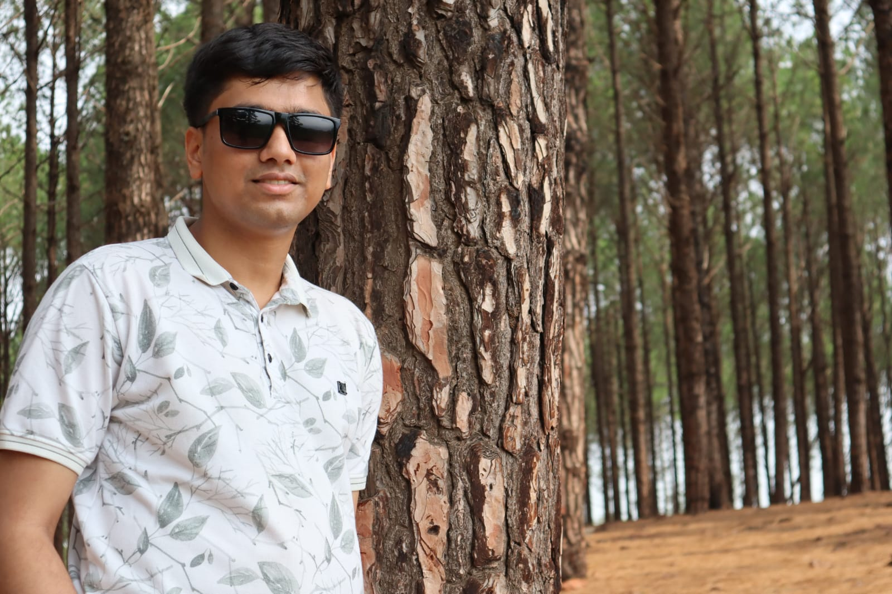

I am a first-year D.Phil. student at the Department of Physics Physics (Astrophysics sub-department), University of Oxford, U.K., currently working with Prof. Alex Schekochihin and Dr. Archie Bott. My studentship is funded by the Clarendon Fund Scholarship (link). My broad research interests are — plasma physics, turbulence, and statistical mechanics. I am currently working on anomalous transport properties in weakly collisional plasma.
Before coming to Oxford, I did Integrated B.S.-M.S. in Physical Sciences from Indian Institute of Science Education and Research (IISER) Kolkata, where I primarily worked on non-equilibrium statistical mechanics and turbulence. I completed my MS thesis on Many Body Chaos in Fully Developed Turbulence (Thesis) from International Centre for Theoretical Sciences (ICTS), Bengaluru (Mentor: Prof. Samriddhi Sankar Ray).
Thanks for dropping by! Feel free to reach out if you have any queries.
Address: Department of Physics, University of Oxford, Denys Wilkinson Building, Keble Road,
Oxford OX1 3RH, U.K.
Email: aikya [dot] banerjee [at] merton [dot] ox [dot] ac [dot] uk